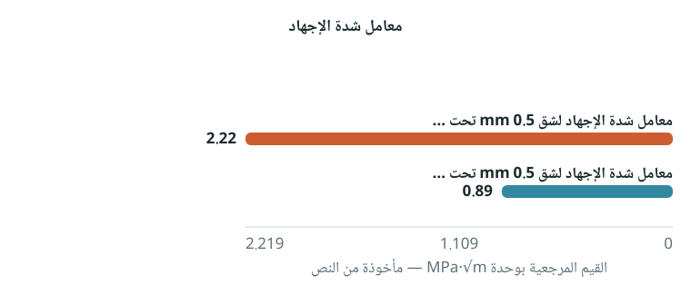

معامل شدة الإجهاد
Stress intensity factor
معامل شدة الإجهاد K يقيس شدة المجال الإجهادي عند رأس شق في مادة، ويتناسب مع الإجهاد المطبق وجذر طول الشق، ويقارَن بقيمة حرجة K_IC لتحديد إن كان الشق سينمو سريعاً.
معامل شدة الإجهاد K هو المقدار الذي يوصف به المجال الإجهادي قرب رأس شق حاد في ميكانيكا الكسر الخطية المرنة. لشق سطحي في صفيحة واسعة: K = Y·σ·√(π·a)، حيث σ الإجهاد المطبق وa طول الشق وY عامل هندسي يعتمد على شكل العينة وموضع الشق (Y ≈ 1.12 لشق سطحي، و1.0 لشق مركزي في صفيحة واسعة). وحدة K هي MPa·√m. وحين يبلغ K قيمة الصلابة K_IC للمادة، يبدأ الشق بالنمو غير المستقر وينكسر الجزء. مثال: صفيحة من زجاج بـK_IC = 0.75 MPa·√m تحت إجهاد 50 MPa، شق سطحي بطول 0.5 mm وY = 1.12: K = 1.12 × 50 × √(π × 0.0005) = 1.12 × 50 × 0.0396 = 2.22 MPa·√m، أي ثلاثة أضعاف الحدّ — الشق سينمو.
كيف تعمل الظاهرة؟
عند رأس الشق يتضخم الإجهاد تضخماً لا نهائياً في نظرية المرونة الخطية، لأن نصف قطر الرأس صفر. ولأن الإجهاد اللانهائي لا معنى له في مادة حقيقية، تُوصف الحالة بمقدار متكامل هو K، الذي يحدد شدة المجال على مسافة صغيرة من الرأس. وكلما زاد K، زادت الطاقة المرنة المتاحة لفتح الشق، حتى تبلغ حدّاً تصير عنده الطاقة المتحررة من نمو الشق كافية لكسر الروابط الذرية عند الرأس. هذا الحدّ هو K_IC، وهو خاصية للمادة تعتمد على بنيتها المجهرية لا على شكل العينة. ولهذا فإن مادة صلبة لكن هشة كالزجاج لها K_IC صغير جداً، بينما الفولاذ المطيل له K_IC كبير.
العلاقة بالأرقام
K = Y·σ·√(π·a). والطول الحرج للشق: a_c = (1/π)·(K_IC/(Y·σ))². ومعدل نمو الشق في الكلال (قانون باريس): da/dN = C·(ΔK)^m، حيث ΔK = Y·Δσ·√(π·a). مثال عددي: زجاج K_IC = 0.75 MPa·√m، σ = 50 MPa، Y = 1.12 → a_c = (1/π)(0.75/(1.12×50))² = (1/π)(0.01339)² = (1/π)(1.793×10⁻⁴) = 5.71×10⁻⁵ m = 0.057 mm. أي أن أي شق أطول من 0.057 mm ينمو تحت 50 MPa.
مفاهيم متقاربة
يُفرَّق بين K وK_t: K_t = σ_max/σ_nom نسبة إجهادات عند حزّ هندسي، وK يصف مجالاً كاملاً حول شق. ويُفرَّق بين ميكانيكا الكسر الخطية المرنة والمرنة اللدنة: الأولى تفترض منطقة لدنة صغيرة عند الرأس، وتفشل حين تكون المنطقة اللدنة كبيرة مقارنة بالشق، فتُستعمل عندئذ تكامل J أو فتح رأس الشق CTOD. ويُفرَّق بين K_IC وK_Ic: الأولى صلابة كسر مستوية الانفعال (سميكة)، والثانية للعينات الرقيقة وقد تكون أعلى. وأخيراً K ليس مقياس أمان مطلقاً: هو يعتمد على Y الذي يعتمد على الهندسة، فقيمة من مرجع لا تصلح لهندسة أخرى.
حدود التطبيق
المعادلة K = Y·σ·√(π·a) صالحة لميكانيكا الكسر الخطية المرنة، أي حين تكون المنطقة اللدنة عند الرأس صغيرة مقارنة بأبعاد الشق والجسم. ولا تصح في المواد المطيلة جداً كالألومنيوم الطري أو البوليمرات، حيث تُستعمل معايير مرنة لدنة. ولا تصح حين يكون الشق طويلاً مقارنة بعرض العينة، لأن Y يتغير تغيراً كبيراً ويجب أخذه من جداول هندسية دقيقة. ولا تصف K سلوك الكلال وحده: تحت التحميل المتكرر يُستعمل مدى ΔK وقانون باريس، وK الساكن لا يكفي.

| الكمية | القيمة | المصدر |
|---|---|---|
| معامل شدة الإجهاد لشق 0.5 mm تحت 50 MPa | 2.219 MPa·√m | [2] |
| معامل شدة الإجهاد لشق 0.5 mm تحت 20 MPa | 0.888 MPa·√m | [2] |
المصادر
- 1 CODATA Value: standard acceleration of gravity — NIST — CODATA 2022 recommended values (2024). physics.nist.gov/cgi-bin/cuu/Value?gn · اطُّلع عليه 2026-11-21
- 2 The International System of Units (SI), 9th edition (2019) — BIPM — Bureau International des Poids et Mesures (2019). www.bipm.org/en/publications/si-brochure · اطُّلع عليه 2026-11-21
- 3 CODATA Value: molar gas constant — NIST — CODATA 2022 recommended values (2024). physics.nist.gov/cgi-bin/cuu/Value?r · اطُّلع عليه 2026-11-21
استشهد بهذا المصطلح
الصيغتان مبنيتان من بيانات الصفحة نفسها: العنوان والتاريخ ورابط النسخة المنشورة.
معامل شدة الإجهاد — Stress intensity factor. (2026). ديوان المعرفة — انفراد. https://infiradev.com/diwan/terms/term-stress-intensity-factor.html
@misc{term-stress-intensity-factor2026,
title = {معامل شدة الإجهاد},
titleaddon = {Stress intensity factor},
howpublished = {{ديوان المعرفة — انفراد} — مرجع علمي عربي},
year = {2026},
url = {https://infiradev.com/diwan/terms/term-stress-intensity-factor.html},
urldate = {2026-11-26},
note = {مراجعة علمية: hermes (مراجعة معتمدة 2026-11-26)}
}
راجعه: hermes (مراجعة معتمدة 2026-11-26) · 2026-11-26 · آخر تحديث 2026-11-21